Variáveis
Sua função
As variáveis são parte muito importantes num código. Elas são responsáveis por armazenar os valores manipulados em nossos programas.
Em diversas linguagens fortemente tipadas, é necessário que o programador declare o tipo de dado que a variável receberá. Desse jeito, possibilitam que o seja identificado um erro no momento que o código é escrito, dando uma maior proteção pro programa.
Já no JavaScript, isso não ocorre. Como ela é uma linguagem fracamente tipada, programador não é obrigado a colocar o tipo da variável e a mesma pode facilmente mudar de um valor numérico para um textual, o que permitiria o programa rodar e o autor só perceberia o resultado diferente no final.
Tipos de dados de variáveis
As variáveis podem admitir alguns formatos como de Numbers, Strings, Booleans (booleanos), Arrays, Objects, Functions e Undefined
-> Numbers
Seguindo o sentido contrário de muitas outras linguagens, O JS não diferencia números inteiros, de ponto flutuante, double precision, entre outros. No geral, todos os números são ponto flutuante contendo 64bits.
Basta apenas adicionar a palavra reservada da variável (var) e o identificador dela, depois o símbolo “=” e entao o valor que será atribuído a ela.
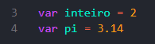Vale ressaltar que caso seja realizada uma operação entre dois inteiros que resultem em um número com casas decimais, o interpretador age de forma correta deixando a resposta com as casas decimais.
-> Strings
Strings são conjuntos de texto. São declaradas usando aspas simples ou aspas duplas:
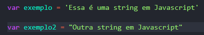-> Booleans
Muitas vezes no código, queremos que uma variável tome como comportamento apenas: verdadeiro ou falso.
Desse pensamento que surgiu os Booleans. Pode-se assumir o valor true (verdadeiro) ou false (falso). São usadas para operações logícos bem comuns em if, while e for.
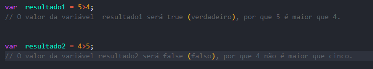-> Objects
Objetos são variáveis que são capazes de armazenar vários valores ao mesmo tempo.
Para criarmos um tipo de dado que descreve um cliente, por exemplo, seria usado o objeto.
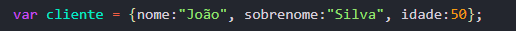Para acessar as propriedades de objetos, usamos o operador de ponto:
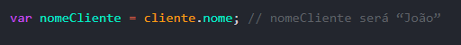-> Arrays
Arrays são objetos de alto nível que descrevem listas de valores. Os arrays são capazes de armazenar diversos valores indexados por números inteiros.
Um array pode receber entre seus elementos qualquer tipo de dado Javascript: strings, números e até mesmo objetos.
Por exemplo, o array abaixo armazena uma lista de carros: 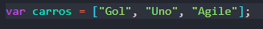Importante sempre lembrar que numa array, o valor de inexação começa no 0. Com isso, mesmo tendo 3 números de carros, o valor de índice do Agile, seria 2 e não 3.
Para acessar elementos de um array, é usada a sintaxe abaixo:
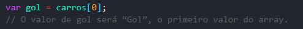Para mudar o valor de uma determinada posição de um array, usamos
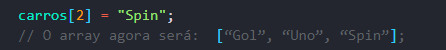Arrays também podem ser declarados usando a palavra-chave 'new':
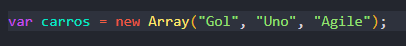O poder dos arrays em Javascript está nos métodos e propriedades disponíveis para usarmos. Vejamos alguns exemplos de métodos e propriedades bastante úteis quando estamos desenvolvendo programas em Javascript.
Para saber o tamanho, isto é, a quantidade de elementos de um array, pode ser usada a propriedade 'length':
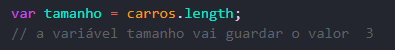Caso precise ordenar os elementos de um array, pode ser usado o método 'sort':
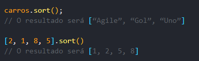O método push é usado para incluir um elemento em um array. Ele sempre inclui o elemento no final do array:
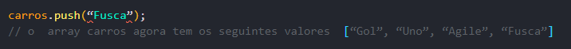Já o método pop apaga o último elemento do array:
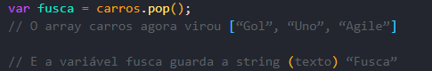Note que o método push recebe como argumento o elemento que deve ser inserido no array. O método pop, por outro lado, não recebe nenhum argumento, mas retorna o elemento excluído do array.
-> Functions
Um recurso bastante interessante dos objetos em Javascript é a possibilidade de definir funções personalizadas. Ainda usando o exemplo do objeto cliente, podemos definir uma função que retorne o nome completo do cliente:
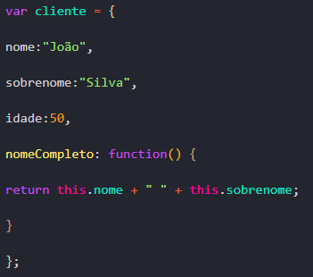A propriedade “nomeCompleto”, quando for chamada por meio do operador de ponto, fará a chamada da função que retornará a propriedade “nome”, concatenada com um espaço e a propriedade “sobrenome”:
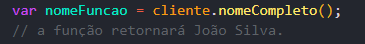Observe que, por ser uma função, ao acessar a propriedade “nomeCompleto”, é preciso abrir e fechar parênteses, explicitando que a função deve ser inicializada.